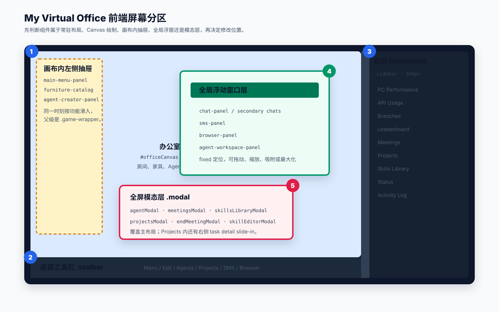

组件在哪里，改哪里
这个项目没有 React/Vue 组件目录。主页面由一个大型 HTML 骨架、一个全局样式表和多个原生 JavaScript 模块组成，其中办公室主体又是 Canvas 即时绘制。阅读前端时，最有效的方法是先按屏幕层级定位，再追踪 DOM、CSS 与行为脚本。
一眼看懂主界面
桌面端的基础版式是横向 Flex：左侧列占剩余空间，右侧 Dashboard 固定 360px，中间有 20px 的折叠把手。左侧列内部再分成可伸缩的 Canvas 区和底部固定工具栏。

蓝色是常驻布局，黄色是画布内部抽屉，绿色是全局浮窗，红色是模态层。

当前界面实图：主 Canvas、底部工具栏和右侧 Dashboard 的实际占位关系。
前端的五个位置层级
1. 常驻 DOM 布局.main-container、.left-column、.toolbar、.sidebar。决定页面骨架与剩余空间。
2. Canvas 绘制层#officeCanvas 内的办公室、家具、Agent、名称牌、气泡和天气都由 game.js 绘制。
3. 画布内抽屉设置、家具目录和 Agent 编辑器绝对定位在 .game-wrapper 内，从左侧滑入。
4. 全局浮动窗口聊天、短信、浏览器与 Workspace 使用 position: fixed，可跨越主布局并具有独立层级。
5. 模态与子面板Agent 详情、会议、技能、项目等使用全屏遮罩；项目任务详情又从视口右侧滑入。
独立页面models.html、cron.html、setup.html 不在首页组件树中，是单独路由页面。
最重要的判断
你在画面中看到的元素不一定存在于 HTML。房间、桌子、人物、气泡属于 Canvas；右侧仪表盘、按钮、聊天窗口才是可直接用 DOM/CSS 调整的组件。
屏幕组件清单
| 屏幕位置 | DOM / 组件 | 结构位置 | 样式与行为 | 设计时主要改什么 |
|---|---|---|---|---|
| 全屏根布局 | .main-container | index.html:27 | style.css:143 | 左右分栏、全屏高度、整体溢出策略。 |
| 中央主视图 | #officeCanvas | index.html:33 | style.css:175game.js | 场景视觉要改绘制函数；尺寸和鼠标行为改 CSS/相机逻辑。 |
| 画布底部 | .toolbar | index.html:200 | style.css:662 | 全局命令入口、按钮顺序、分组和横向滚动。 |
| 画布与侧栏之间 | .sidebar-edge | index.html:217 | style.css:822 | 折叠交互；折叠后会调用 resizeCanvas()。 |
| 右侧常驻区 | #sidebar | index.html:220 | style.css:857 | 仪表盘宽度、模块顺序、滚动和折叠。 |
| 右侧模块 | PC / API / Branches / Projects / Logs | index.html:239-337 | pc-monitor.jsapi-usage.jsgame.js | 指标卡、状态颜色、信息密度和模块展开状态。 |
| 画布左侧滑入 | #main-menu-panel | index.html:35 | style.css:4game.js | 设置分组、表单字段、连接测试和保存入口。 |
| 画布左侧滑入 | #furniture-catalog | 由 game.js:13829 动态创建 | style.css:3710 | 家具分类、图标、选中状态和编辑工作流。 |
| 画布左侧滑入 | #agent-creator-panel | 由 game.js:12858 动态创建 | style.css:3866 | Agent 列表、外观表单、创建与删除操作。 |
| 右下/可浮动 | #chat-panel + 3 个副窗口 | index.html:660 | style.css:1916chat.js | 窗口尺寸、吸附、多会话、消息卡片和输入区。 |
| 右下/可浮动 | #sms-panel | index.html:601 | style.css:1379sms-panel.js | 联系人列表、会话详情、移动端列表/详情切换。 |
| 自由浮动 | #browser-panel | index.html:718 | style.css:3415 附近browser-panel.js | 标题栏、控制权、四角吸附、iframe 查看区。 |
| 自由浮动 | #agent-workspace-panel | index.html:754 | style.css:211game.js:7193+ | Overview、Tasks、Files、Skills、Notes、Settings 标签页。 |
| 全屏遮罩 | .modal 系列 | index.html:342-599 | style.css:1023 | Agent 详情、会议、技能库、结束会议等内容。 |
| 大型业务模态 | #projectsModal | index.html:557 | projects.cssprojects.js | 列表/看板/模板/报告视图、任务拖拽、详情侧滑层。 |
按文件理解职责
app/index.html首页 DOM 骨架和脚本装配。新增常驻组件、浮窗容器、模态容器，先从这里找。app/style.css全站像素风、主布局、侧栏、浮窗、模态、画布编辑器和响应式规则。当前约 4,273 行。app/game.js办公室核心。Canvas 绘制、Agent 状态、路径、编辑器、会议、技能库、Workspace 都集中在此，约 15,755 行。app/chat.js聊天窗口类、多窗口克隆、WebSocket、流式消息、工具卡、拖动缩放和吸附。app/projects.js/css项目管理是相对独立的业务组件，拥有自己的状态、渲染、拖放、API 和样式作用域。小型功能模块
browser-panel.js、sms-panel.js、pc-monitor.js、api-usage.js 分别接管对应 DOM。页面骨架：index.html
├─ 主布局尺寸与皮肤：style.css
├─ Canvas + 办公室交互：game.js
├─ Chat Window：chat.js
├─ Projects Modal：projects.js + projects.css
├─ Browser Window：browser-panel.js
├─ SMS Window：sms-panel.js
├─ Sidebar Metrics：pc-monitor.js + api-usage.js
└─ 文案翻译：i18n.js + locales/{en,zh}.json
当前分支提示
feishu-panel.js 目前存在于工作区，但没有在 index.html 中找到对应 DOM 或脚本挂载，因此它不属于当前可见组件树。后续接入时需要同时补容器、样式和 script 引用。
以后开发时怎么快速定位
- 看到办公室里的物体或人物：先在
game.js搜drawXxx、Agent.draw、drawAllBubbles，不要先找 HTML。 - 看到固定按钮或仪表盘：在
index.html搜文字或 id，再用同名 class 去style.css，最后查对应 JS 事件。 - 看到可拖动窗口：先确认它是 chat、SMS、browser 还是 workspace；每个模块都有自己的尺寸、吸附和 z-index 逻辑。
- 看到弹窗：先查
.modal通用壳，再查专属 class。Projects 是例外，它还有独立projects.css。 - 新增可翻译文案：在 DOM 上使用
data-i18n，并同步更新locales/en.json与locales/zh.json。
后续设计与重构注意点
响应式断点是 900px窄屏时主布局变为纵向，Sidebar 移到 Canvas 下方；Chat 和 SMS 也切换成底部抽屉式布局。
Canvas 缩放不是 CSS 缩放画布尺寸、相机比例、世界坐标转换互相关联。改 Sidebar 或 Toolbar 尺寸后要验证
resizeCanvas()。z-index 已形成多层体系画布抽屉约 100，Workspace 1300，Browser 1500，Chat/SMS 10001。新浮层需要明确属于哪一层。
动态 DOM 不在 index.html家具目录和 Agent 编辑器由
game.js 创建。只读 HTML 会漏掉这两个关键组件。避免继续扩大 game.js新增独立业务窗口时，优先沿用 Projects/Browser/SMS 的模块化方式，保留 HTML 容器并将行为放入单独 JS。
视觉修改要测浮窗重叠至少验证 1440px 桌面、900px 临界宽度和 480px 手机，尤其关注 Sidebar、工具栏、Chat、SMS 与 Browser。